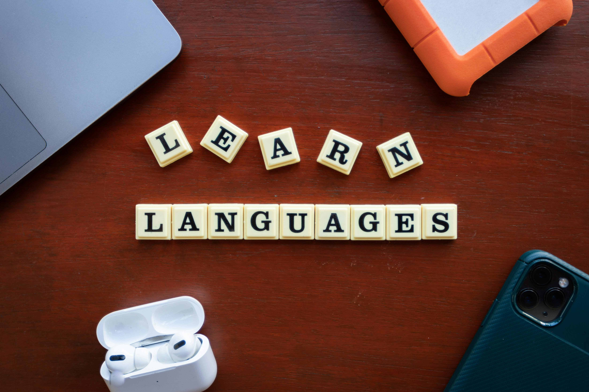

Educational professional with a strong interest in research on inclusive and sustainable transformation in education.
My work focuses on collaborative curriculum design and educational research aimed at improving equitable and meaningful learning experiences.
Minki Moniccah Lekgabe is an educational professional and curriculum developer at the Department of Curriculum Development & Evaluation, Ministry of Child Welfare and Basic Education in Botswana. Her work is deeply rooted in collaborative curriculum design, educational research, and teacher capacity development, with a strong commitment to inclusive and sustainable educational transformation.
My professional interests encompass collaborative curriculum design, educational research, and the development of teacher capacity, all underscored by a strong dedication to enhancing teaching and learning outcomes. I am particularly interested in research that focuses on inclusive and sustainable educational transformation. I am currently a curriculum developer based at the Department of Curriculum Development & Evaluation, Ministry of Child Welfare and Basic Education in Botswana
I have played a pivotal role in reconfiguring the General Education Curriculum and Assessment Framework (GECAF) to strengthen its STEAM orientation, serving as Secretary to the GECAF Review Committee. Moniccah also contributed to the development of the Botswana Languages Policy in Education, advocating for the integration of indigenous languages to foster equitable learning environments.

My academic background includes a Master’s degree in Educational Research, a Post Graduate Diploma in Education, a BA in Humanities, and an Honors Degree in Teaching French as a Foreign or Second Language. She has also completed specialized training in STEM, innovation, and entrepreneurship, alongside advanced French language proficiency.